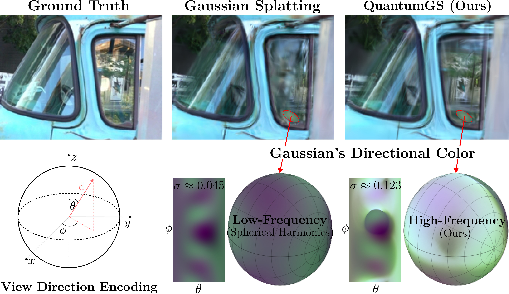
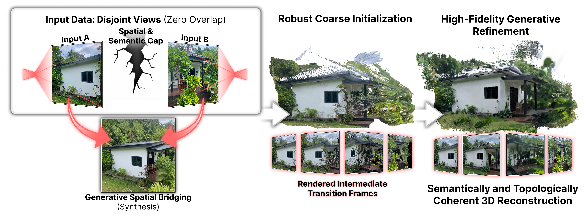

Grzegorz Wilczyński
Senior Research Engineer @ IDEAS Research Institute
PhD Student @ Jagiellonian University
PhD Student @ Jagiellonian University
I bridge the gap between generative AI and 3D computer vision. Currently focusing on neural rendering, Gaussian Splatting, and structurally coherent 3D reconstruction from disjoint views. With 6+ years of industry experience, I build systems that are theoretically sound and production-ready.
Featured Research
IRIS: Implicit Reconstruction in Space
Under review ECCV 2026
A novel approach to implicit 3D scene representation, focusing on high-fidelity rendering and robust geometric priors for complex environments.

QuantumGS: Quantum Encoding for 3DGS
Accepted to PPSN 2026 (CORE A)
An innovative framework leveraging quantum encoding techniques to optimize the parameters and memory footprint of Gaussian Splatting representations.

MindTheGap: Disjoint Views Reconstruction
Submitted to NeurIPS 2026
Bridging the spatial divide in 3D reconstruction by introducing generalized priors to synthesize novel views from strictly non-overlapping images.
Other Publications
HuSc3D: Human and Scene 3D Co-reconstruction
Accepted to ICCS 2026
Simultaneous reconstruction of dynamic human subjects and static scenes from monocular video, maintaining robust spatial coherence.
Read Paper →REdiSplat: Real-time Editing of Gaussian Splats
A lightweight framework for semantic manipulation and geometry editing of pre-trained 3D Gaussian Splatting models.
Read Paper →Performance Comparison of Edge Computing Devices
Accepted to JCSE 2023
A comprehensive evaluation and benchmarking of various edge devices, focusing on their efficiency and suitability for deploying machine learning models.
Read Paper →Experience & Fellowships
Senior Research Engineer
IDEAS Research Institute | Present
Focusing purely on core AI research, generative models, and advancing the state-of-the-art in 3D Computer Vision.
Visiting Researcher
University of Cambridge | Cyber-Human Lab
One-month intensive research visit focused on human-computer interaction, spatial computing, and applied 3D rendering systems.
Machine Learning Engineer
BulletProve & BFirst | 6 Years
Deployed production-grade systems in object detection, keyword spotting, and recommendation engines.